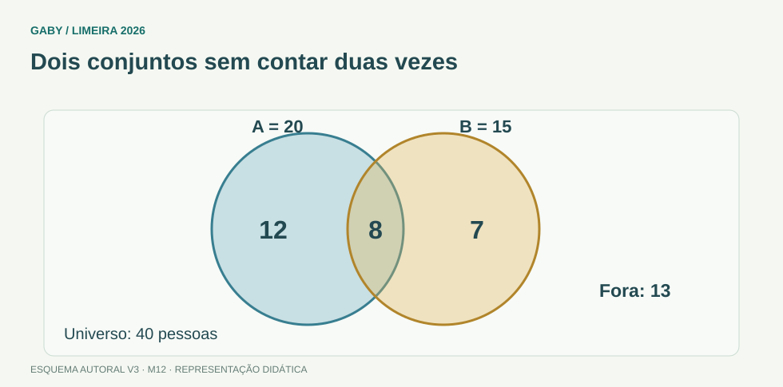

Objetivos do módulo
- Representar conjuntos por diagramas.
- Interpretar “todo”, “algum” e “nenhum”.
- Resolver problemas de contagem simples com união e interseção.
- Distinguir pertinência (∈) de inclusão (⊂) e o conjunto vazio do conjunto unitário {∅}.
- Usar diferença, diferença simétrica, complementar e as leis de De Morgan.
- Resolver problemas com três conjuntos pelo diagrama de oito regiões e pela inclusão-exclusão.
- Encontrar os valores mínimo e máximo possíveis da união e da interseção.
- Aplicar o princípio da casa dos pombos pelo pior caso.
- Contar com o princípio multiplicativo, arranjo, permutação e combinação e calcular probabilidades simples, inclusive com universo restrito.
Dois conjuntos sem contar duas vezes

Descrição em texto do esquema
- Somente A: 12 pessoas
- A e B: 8 pessoas
- Somente B: 7 pessoas
Oficina visual · aplique o esquema
Em um grupo de 40 pessoas, 20 usam A, 15 usam B e 8 usam ambos. Quantas não usam nenhum?
Atividade autoral complementar da V3. Registre sua resposta; a resolução está no arquivo de gabarito e revisão.
Mapa do conteúdo
1. Linguagem de conjuntos
“Todo A é B” significa A contido em B. “Nenhum A é B” significa conjuntos disjuntos. “Algum A é B” exige interseção não vazia. Desenhar círculos reduz ambiguidade.
Elemento e pertinência
Conjunto é uma coleção de objetos, chamados elementos. A relação entre um elemento e um conjunto é a pertinência: escrevemos x ∈ A (“x pertence a A”) ou x ∉ A (“x não pertence a A”). Ordem e repetição não mudam o conjunto: {1, 2, 3} = {3, 1, 2} = {1, 1, 2, 3}.
Subconjunto e inclusão
A relação entre dois conjuntos é a inclusão: A ⊂ B (“A está contido em B”, ou “A é subconjunto de B”) quando todo elemento de A também é elemento de B. Nesta aula, A ⊂ B e A ⊆ B têm o mesmo sentido e admitem A = B. Quando, além disso, B tem pelo menos um elemento fora de A, a inclusão é própria. Se A ⊂ B e B ⊂ A, então A = B.
| Relação | Liga | Símbolos | Exemplo com A = {3, {3, 4}, 5} |
|---|---|---|---|
| Pertinência | elemento e conjunto | ∈ e ∉ | 3 ∈ A; {3, 4} ∈ A; 4 ∉ A |
| Inclusão | conjunto e conjunto | ⊂ e ⊄ | {3} ⊂ A; {3, 5} ⊂ A; {{3, 4}} ⊂ A; {3, 4} ⊄ A |
Conjunto como elemento. O conjunto A da tabela tem três elementos: o número 3, o conjunto {3, 4} e o número 5. O número 4 aparece “dentro” de um elemento, mas não é elemento de A. Por isso {3, 4} pertence a A (é um dos elementos), mas não está contido em A (o 4 não pertence a A). Para testar pertinência, procure o objeto inteiro na lista de elementos; para testar inclusão, verifique cada elemento do conjunto menor.
Conjunto vazio e conjunto unitário
- Conjunto vazio (∅ ou { }): não tem elementos; n(∅) = 0. Ele está contido em qualquer conjunto, porque não tem elemento que fique de fora.
- Conjunto unitário: tem exatamente um elemento, como {7}.
- ∅ ≠ {∅}: {∅} é um conjunto unitário cujo único elemento é o conjunto vazio; n({∅}) = 1. Já {∅, {∅}} tem dois elementos.
A notação n(A) indica o número de elementos de A; alguns textos escrevem |A| ou #A.
2. União e interseção
União A∪B reúne elementos de A ou B; interseção A∩B reúne elementos comuns. Para contagem de dois conjuntos: |A∪B|=|A|+|B|−|A∩B|.
As operações básicas
| Operação | Quem entra | Exemplo: A = {2, 3, 5, 7} e B = {1, 3, 5, 9} |
|---|---|---|
| União A ∪ B | quem está em A ou em B (ou em ambos) | {1, 2, 3, 5, 7, 9} |
| Interseção A ∩ B | quem está em A e em B ao mesmo tempo | {3, 5} |
| Diferença A − B | quem está em A e não está em B | {2, 7} |
| Diferença B − A | quem está em B e não está em A | {1, 9} |
| Diferença simétrica | quem está em exatamente um dos dois conjuntos: (A − B) ∪ (B − A) | {1, 2, 7, 9} |
A diferença não é comutativa: em geral A − B ≠ B − A. União e interseção são comutativas: A ∪ B = B ∪ A e A ∩ B = B ∩ A.
Conjuntos disjuntos e partição
A e B são disjuntos quando não têm elemento comum: A ∩ B = ∅ (interseção vazia). Consequências: se x ∈ A, então x ∉ B; n(A ∪ B) = n(A) + n(B); e um diagrama não pode, ao mesmo tempo, declarar A ∩ B = ∅ e mostrar um elemento em A e em B, porque as duas informações se contradizem. Ser disjunto não exige que algum dos conjuntos seja vazio.
Uma partição do universo é uma divisão em partes não vazias, disjuntas duas a duas, que juntas cobrem todo o universo. Numa partição, as quantidades simplesmente se somam. Exemplo: 120 alunos estão matriculados em exatamente um turno; 47 de manhã e 39 à tarde. Os da noite são 120 − 47 − 39 = 34. Também formam partições um conjunto e seu complementar (se nenhum dos dois for vazio) e as regiões do diagrama de dois conjuntos (desconsideradas as que estiverem vazias).
Inclusão-exclusão com dois conjuntos
Na soma n(A) + n(B), quem está nos dois conjuntos é contado duas vezes. Subtraindo a interseção uma vez, cada elemento passa a ser contado uma única vez:
n(A ∪ B) = n(A) + n(B) − n(A ∩ B)
Lida ao contrário, a mesma igualdade dá a interseção quando a união é conhecida: n(A ∩ B) = n(A) + n(B) − n(A ∪ B). Se todos estão em pelo menos um dos conjuntos, a união é o universo inteiro.
As quatro regiões do diagrama de dois conjuntos
Dois círculos sobrepostos dentro do retângulo do universo criam quatro regiões disjuntas. Exemplo: em 90 pessoas, 52 leem jornal (A), 41 ouvem rádio (B) e 17 fazem as duas coisas; a união tem 52 + 41 − 17 = 76.
| Região | Como calcular | No exemplo |
|---|---|---|
| Ambos (A ∩ B) | dado, ou obtido pela inclusão-exclusão | 17 |
| Somente A (A − B) | n(A) − n(A ∩ B) | 52 − 17 = 35 |
| Somente B (B − A) | n(B) − n(A ∩ B) | 41 − 17 = 24 |
| Nenhum (fora dos dois) | n(U) − n(A ∪ B) | 90 − 76 = 14 |
Conferência: 35 + 24 + 17 + 14 = 90. “Pelo menos um” é a união (76); “exatamente um dos dois” é a diferença simétrica (35 + 24 = 59); “somente A” exclui a interseção, mas “lê jornal” a inclui (52).
Conjuntos com percentuais
Quando os dados vêm em porcentagem, o universo vale 100%. Se 60% de um grupo preferem o serviço X, 55% preferem Y e todos preferem pelo menos um, então ambos = 60% + 55% − 100% = 15%.
Cuidado com o percentual de percentual: “40% fazem o curso A e, desses, 25% também fazem B” significa que a interseção é 25% de 40%, isto é, 0,25 × 40% = 10% do total, e não 25%. Se todos fazem pelo menos um dos cursos, os 60% que não fazem A estão em B, e B reúne 60% + 10% = 70%.
Múltiplos de um número ou de outro
Para contar os inteiros de 1 a N que são múltiplos de a ou de b, conte os múltiplos de cada um (a parte inteira de N ÷ a e de N ÷ b) e desconte os múltiplos comuns, que são os múltiplos do MMC (mínimo múltiplo comum) de a e b. Exemplo: de 1 a 100 há 33 múltiplos de 3, 20 de 5 e 6 de 15; múltiplos de 3 ou de 5: 33 + 20 − 6 = 47. O múltiplo comum usa o MMC, não o produto: de 1 a 120, os múltiplos de 6 (20) e os de 9 (13) coincidem nos múltiplos de 18 (6), e a união tem 20 + 13 − 6 = 27.
3. Complemento
Complemento de A, dentro de um universo U, são elementos de U que não pertencem a A. Questões “não usa nenhum dos dois serviços” frequentemente pedem complemento da união.
Complementar e universo
O complementar depende do universo U escolhido: Aᶜ = U − A (também escrito A′ ou Ā). Na contagem, n(Aᶜ) = n(U) − n(A). O complementar de qualquer conjunto, inclusive de uma interseção, sai do mesmo jeito: se U tem 200 elementos e n(A ∩ B) = 48, então o complementar de A ∩ B tem 200 − 48 = 152 elementos, sem precisar conhecer A e B separadamente.
Diferença como interseção com o complementar: A − B = A ∩ Bᶜ, porque estar em A − B é estar em A e não estar em B.
Leis de De Morgan para conjuntos
| Lei | Leitura |
|---|---|
| (A ∪ B)ᶜ = Aᶜ ∩ Bᶜ | O complementar da união é a interseção dos complementares: estar fora da união é estar fora de A e fora de B. |
| (A ∩ B)ᶜ = Aᶜ ∪ Bᶜ | O complementar da interseção é a união dos complementares: não estar nos dois é estar fora de pelo menos um. |
Exemplo: U = {1, 2, 3, 4, 5, 6, 7, 8}, A = {1, 2, 3, 4} e B = {3, 4, 5}. A ∪ B = {1, 2, 3, 4, 5}, logo (A ∪ B)ᶜ = {6, 7, 8}. Por outro lado, Aᶜ = {5, 6, 7, 8} e Bᶜ = {1, 2, 6, 7, 8}, cuja interseção também é {6, 7, 8}. Além disso, A − B = {1, 2} = A ∩ Bᶜ.
“Fora de todos” é o complementar da união, para dois, três ou mais conjuntos. Se a união já foi informada, basta subtraí-la do universo: num universo de 150 elementos em que a união de três conjuntos tem 112, ficam fora dos três 150 − 112 = 38; não é preciso conhecer as sobreposições internas.
4. Estratégia
Preencha primeiro a interseção, depois as regiões exclusivas, por fim o exterior. Isso evita contar duas vezes.
Roteiro para qualquer problema de diagrama
- Defina o universo (quem está sendo contado) e os conjuntos.
- Traduza cada frase: “usa A” = n(A); “somente A” = região exclusiva; “ambos” = interseção; “nenhum” = fora da união; “pelo menos um” = união.
- Verifique se as interseções informadas incluem ou não a parte comum a todos os conjuntos.
- Preencha do centro para fora: interseção (ou parte comum a todos), depois as partes exclusivas e, por último, o exterior.
- Confira: a soma de todas as regiões deve dar o universo.
5. Diagramas lógicos e inclusões
Nas proposições com “todo”, “algum” e “nenhum”, cada termo (secretários, servidores, estudantes…) vira um círculo, e o retângulo é o universo. O diagrama mostra o que a frase garante e deixa em aberto o que ela não informa.
| Proposição | Diagrama descrito | Em conjuntos |
|---|---|---|
| Todo A é B | o círculo A fica inteiramente dentro do círculo B (podem coincidir) | A ⊂ B; A − B = ∅ |
| Todo A é B, mas nem todo B é A | A dentro de B, e B tem região fora de A com pelo menos um elemento | inclusão própria |
| Nenhum A é B | círculos separados, sem sobreposição | A ∩ B = ∅ |
| Algum A é B | círculos sobrepostos, com pelo menos um elemento na parte comum | A ∩ B ≠ ∅ |
| Algum A não é B | pelo menos um elemento na parte de A que fica fora de B | A − B ≠ ∅ |
“Algum A é B” não informa se todos os A são B: a parte comum está ocupada e as demais regiões ficam em aberto. As negações saem do diagrama: a negação de “todo A é B” é “algum A não é B”; a negação de “nenhum A é B” é “algum A é B”.
Condicional como inclusão
“Se um elemento está em A, então está em B”, quando vale para todos os elementos do universo, é o mesmo que A ⊂ B. Exemplo: num cartório, seja R o conjunto dos processos arquivados, E o dos processos em análise e S o dos suspensos. Se vale, para todo processo, “se não foi arquivado, então está em análise ou suspenso”, então todo elemento de Rᶜ está em E ∪ S, isto é, Rᶜ ⊂ E ∪ S.
Propriedades da inclusão
- Transitividade: se A ⊂ B e B ⊂ C, então A ⊂ C. Não se conclui A = C nem C ⊂ A.
- Se A ⊂ B, então A ∪ B = B (acrescentar A não traz nada novo), A ∩ B = A (todos os elementos de A são comuns) e A − B = ∅.
- Se A ⊂ B, então n(B − A) = n(B) − n(A). Exemplo: com A ⊂ B, n(A) = 23 e n(B) = 40, há 40 − 23 = 17 elementos em B fora de A.
- Se A ⊂ C e B ⊂ C, então A ∪ B ⊂ C. Sempre vale A ∩ B ⊂ A ⊂ A ∪ B.
Família de conjuntos encaixados
Uma sequência de conjuntos em que cada um está contido no seguinte, D1 ⊂ D2 ⊂ D3 ⊂ …, é uma família de conjuntos encaixados (uma cadeia de inclusões). Exemplo: Dn = {1, 2, …, n}. Nela:
- o conjunto de condição mais restrita é o menor: D3 ⊂ D5, e não o contrário;
- a união de D1 até Dk é o maior deles, Dk, e a interseção é o menor, D1;
- a união de todos os Dn (união infinita) é o conjunto dos inteiros positivos: cada inteiro m pertence a Dm, e a união não contém nada que não esteja em algum Dn;
- “menor menos maior” é vazio (D10 − D20 = ∅); a faixa entre dois níveis é “maior menos menor”: D20 − D10 = {11, 12, …, 20}, com 10 elementos.
6. Três conjuntos
Três círculos A, B e C que se cruzam dentro do universo criam oito regiões disjuntas:
| Região | Quem está nela |
|---|---|
| 1 | somente A |
| 2 | somente B |
| 3 | somente C |
| 4 | A e B, fora de C |
| 5 | A e C, fora de B |
| 6 | B e C, fora de A |
| 7 | nos três (centro do diagrama) |
| 8 | fora dos três |
Preencher do centro para fora
Em geral, o valor informado de n(A ∩ B) inclui quem está nos três. Por isso, comece pelo centro do diagrama (a interseção dos três), desconte o centro de cada interseção dupla, depois obtenha as partes “somente” e, por fim, o exterior.
Exemplo: entre 100 servidores, 45 fizeram curso de Excel (E), 38 de Word (W) e 30 de Redação (R); 15 fizeram E e W, 12 fizeram E e R, 10 fizeram W e R (essas duplas incluem os três) e 6 fizeram os três.
| Região | Conta | Resultado |
|---|---|---|
| Nos três (centro) | dado | 6 |
| E e W, fora de R | 15 − 6 | 9 |
| E e R, fora de W | 12 − 6 | 6 |
| W e R, fora de E | 10 − 6 | 4 |
| Somente E | 45 − 9 − 6 − 6 | 24 |
| Somente W | 38 − 9 − 4 − 6 | 19 |
| Somente R | 30 − 6 − 4 − 6 | 14 |
| Nenhum | 100 − 82 | 18 |
A união é 24 + 19 + 14 + 9 + 6 + 4 + 6 = 82.
Ler o que a questão pede
- “Pertence a E” (fez Excel): todas as regiões dentro de E, 24 + 9 + 6 + 6 = 45. Não confunda com “somente E” (24).
- “Somente E” direto pelos dados: n(E) − n(E ∩ W) − n(E ∩ R) + n(E ∩ W ∩ R) = 45 − 15 − 12 + 6 = 24. O centro foi retirado duas vezes e volta uma.
- “Exatamente dois”: as três regiões de dupla sem o centro, 9 + 6 + 4 = 19. Quem está nos três não conta.
- “Pelo menos dois”: exatamente dois mais os três, 19 + 6 = 25.
- “Exatamente um”: 24 + 19 + 14 = 57.
- “Pelo menos um” é a união (82); “nenhum” é o complementar da união (18).
Inclusão-exclusão com três conjuntos
n(A ∪ B ∪ C) = n(A) + n(B) + n(C) − n(A ∩ B) − n(A ∩ C) − n(B ∩ C) + n(A ∩ B ∩ C)
Por que a interseção dos três volta: quem está nos três é somado três vezes (em A, em B e em C) e subtraído três vezes (nas três duplas); ficaria sem ser contado, por isso a tripla é somada uma vez. No exemplo: 45 + 38 + 30 − 15 − 12 − 10 + 6 = 82, como no diagrama.
Atalho da soma dos tamanhos. Na soma n(A) + n(B) + n(C), quem está em exatamente um conjunto conta 1 vez, em exatamente dois conta 2 vezes e nos três conta 3 vezes. Logo:
soma dos tamanhos − união = (exatamente dois) + 2 × (nos três)
No exemplo: 113 − 82 = 31 = 19 + 2 × 6. Se ninguém está nos três, a diferença entre a soma e a união é exatamente o número de quem está em dois conjuntos.
7. Valores mínimo e máximo
Quando só se conhecem os tamanhos dos conjuntos (e do universo), a interseção e a união não ficam determinadas, mas têm limites.
| Quantidade | Máximo possível | Mínimo possível |
|---|---|---|
| Interseção A ∩ B | o tamanho do menor conjunto (o menor dentro do maior) | n(A) + n(B) − n(U), se der positivo; senão, 0 |
| União A ∪ B | n(A) + n(B), sem passar de n(U) (conjuntos sem sobreposição) | o tamanho do maior conjunto (o menor dentro do maior) |
O mínimo da interseção vem da inclusão-exclusão: n(A ∩ B) = n(A) + n(B) − n(A ∪ B) é menor quando a união é maior, e a união não passa do universo. Exemplo: num universo de 40, com n(A) = 27 e n(B) = 22, a interseção fica entre 27 + 22 − 40 = 9 e 22, e a união fica entre 27 e 40. Em porcentagem: se 80% gostam de X e 70% de Y, pelo menos 80% + 70% − 100% = 50% gostam dos dois.
Mínimo comum a três conjuntos
Para garantir quantos estão nos três, conte quem pode estar fora de algum: no máximo a soma dos complementares. Num universo de 50, com n(A) = 44, n(B) = 42 e n(C) = 40, os complementares têm 6, 8 e 10 elementos; no máximo 24 estão fora de algum conjunto, e pelo menos 50 − 24 = 26 estão nos três. Esse mínimo acontece quando os complementares não se sobrepõem.
8. Princípio da casa dos pombos
Se n + 1 objetos (pombos) são distribuídos em n caixas (casas ou gavetas), pelo menos uma caixa recebe 2 ou mais objetos. Versão geral: se mais de k × n objetos (isto é, k × n + 1 ou mais) são distribuídos em n caixas, alguma caixa recebe pelo menos k + 1. Também se chama princípio das gavetas ou de Dirichlet.
Raciocínio pelo pior caso
Perguntas com “garantir”, “com certeza” ou “no mínimo, para ter certeza” pedem o pior caso: imagine a distribuição mais desfavorável possível e acrescente mais um.
| Situação | Pior caso | Resposta |
|---|---|---|
| Cartas de 4 naipes; garantir 3 do mesmo naipe | 2 de cada naipe: 8 cartas | 8 + 1 = 9 |
| Pessoas; garantir 3 nascidas no mesmo dia da semana | 2 por dia: 14 pessoas | 14 + 1 = 15 |
| 50 documentos em 7 gavetas; quantos ficam garantidos numa mesma gaveta | 7 por gaveta só acomoda 49 | pelo menos 8 |
| Caixa com 10 bolas azuis, 8 vermelhas e 5 verdes; garantir uma verde | saem antes todas as azuis e vermelhas (18) | 18 + 1 = 19 |
| Mesma caixa; garantir duas de cores diferentes | saem antes as 10 azuis | 10 + 1 = 11 |
Regra útil: com n categorias e objetos suficientes de cada uma, para garantir k objetos de uma mesma categoria retire n × (k − 1) + 1. O princípio garante a existência de uma caixa cheia, não a igualdade entre as caixas.
9. Contagem
Princípio multiplicativo
Se uma tarefa é feita em etapas sucessivas, com m1 modos na primeira, m2 na segunda (para cada escolha da primeira), e assim por diante, o total é m1 × m2 × …. É o princípio multiplicativo, também chamado princípio fundamental da contagem. Quando os casos são alternativos e não se sobrepõem (“ou um, ou outro”), as quantidades se somam (princípio aditivo).
| Situação | Conta | Total |
|---|---|---|
| Senha de 3 letras (26 letras), com repetição | 26 × 26 × 26 | 17 576 |
| Senha de 3 letras distintas (sem repetição) | 26 × 25 × 24 | 15 600 |
| Código: 1 vogal seguida de 2 algarismos distintos | 5 × 10 × 9 | 450 |
Sem repetição, cada etapa tem uma opção a menos que a anterior. Num código, o primeiro algarismo pode ser zero; num número natural de vários algarismos, o primeiro não pode.
Produto cartesiano e pares ordenados
A × B é o conjunto de todos os pares ordenados (a, b) com a ∈ A e b ∈ B. Pelo princípio multiplicativo, n(A × B) = n(A) × n(B). Num par ordenado a ordem importa: (a, b) ≠ (b, a) quando a ≠ b. Exemplo: com 4 camisas e 3 calças há 4 × 3 = 12 modos de se vestir. Cumprimentos entre dois grupos diferentes (cada pessoa de um grupo com cada pessoa do outro) também são pares: 12 pessoas de um setor e 9 de outro geram 12 × 9 = 108 cumprimentos entre os setores.
Permutação e fatorial
O fatorial de n é n! = n × (n − 1) × … × 2 × 1, com 0! = 1 por convenção. Valores: 3! = 6; 4! = 24; 5! = 120; 6! = 720. Permutar n objetos distintos é colocá-los em ordem, o que pode ser feito de n! modos: 5 pastas em fila ficam de 120 modos. Escolhas independentes se multiplicam: se 3 servidores ocupam 3 mesas diferentes (3! = 6 modos) e, independentemente, 3 turnos diferentes (3! = 6 modos), há 6 × 6 = 36 configurações.
Arranjo: a ordem importa
Escolher k objetos distintos entre n, em ordem (cargos ou posições diferentes), dá An,k = n × (n − 1) × … × (n − k + 1) = n! ÷ (n − k)!. Exemplo: presidente, vice e secretário entre 8 pessoas: 8 × 7 × 6 = 336.
Combinação: a ordem não importa
Escolher k entre n sem importar a ordem (comissão, grupo, subconjunto) dá C(n, k) = n! ÷ [k! × (n − k)!]. Cada grupo de k pessoas aparece k! vezes no arranjo, por isso C(n, k) = An,k ÷ k!. Exemplo: comissão de 3 entre 8 pessoas: 336 ÷ 6 = 56. Para k = 2: C(n, 2) = n × (n − 1) ÷ 2; assim C(6, 2) = 15, e 10 pessoas que se cumprimentam uma vez por par trocam C(10, 2) = 45 apertos de mão.
Teste rápido: troque a ordem de dois escolhidos. Se o resultado muda (cargos, posições, senhas), é arranjo; se não muda (grupo, comissão), é combinação.
Combinações em etapas
- Equipe com 1 coordenador entre 4 candidatos e 2 auxiliares entre 7: 4 × C(7, 2) = 4 × 21 = 84.
- Duas salas diferentes, cada uma com 2 pessoas escolhidas entre 5: C(5, 2) para a sala 1 e C(3, 2) para a sala 2, entre as que sobraram: 10 × 3 = 30. Quando todas as pessoas disponíveis são usadas, escolher a equipe da primeira sala já determina a da segunda.
Número de subconjuntos
Para formar um subconjunto, cada elemento entra ou não entra: 2 opções por elemento. Um conjunto de n elementos tem 2n subconjuntos, contando o vazio e o próprio conjunto; esse é o número de elementos do conjunto das partes. Com 5 elementos: 25 = 32.
- Subconjuntos que contêm um elemento fixo: só os outros n − 1 decidem, 2n − 1 (16 para n = 5).
- Subconjuntos não vazios: 2n − 1.
- Subconjuntos com exatamente k elementos: C(n, k). Para n = 5: 1 + 5 + 10 + 10 + 5 + 1 = 32.
10. Probabilidade
Num experimento aleatório (lançar um dado, sortear uma pessoa), o espaço amostral é o conjunto de todos os resultados possíveis, e um evento é um subconjunto dele. Se todos os resultados são igualmente prováveis (espaço equiprovável):
P(E) = casos favoráveis ÷ casos possíveis = n(E) ÷ n(espaço amostral)
- 0 ≤ P(E) ≤ 1; o evento impossível tem probabilidade 0 e o certo, 1.
- Complementar: P(não E) = 1 − P(E).
- “Ao acaso”, “aleatoriamente” e “uniformemente” indicam resultados igualmente prováveis.
Dois dados: use pares ordenados
Dois dados comuns geram 6 × 6 = 36 pares ordenados (1º dado, 2º dado), todos equiprováveis. Soma 7: (1, 6), (2, 5), (3, 4), (4, 3), (5, 2) e (6, 1), logo 6/36 = 1/6. Soma 4: (1, 3), (2, 2) e (3, 1), logo 3/36 = 1/12. Mesmo que os dados sejam idênticos, (1, 3) e (3, 1) são resultados diferentes; contar resultados sem ordem daria um espaço que não é equiprovável.
Probabilidade com contagem
Casos favoráveis e possíveis costumam vir de uma combinação. Sorteando 2 pessoas entre 6, há C(6, 2) = 15 duplas equiprováveis, e a chance de sair uma dupla específica é 1/15. Se 3 das 6 pessoas foram aprovadas e 3 não, a chance de a dupla ter exatamente um aprovado é (3 × 3) ÷ 15 = 9/15 = 3/5.
Universo restrito (probabilidade condicional)
Expressões como “sabendo que”, “dado que” ou “escolhido entre os que…” reduzem o espaço amostral ao conjunto da condição. Escolhendo ao acaso um elemento de A, a probabilidade de ele também estar em B é:
P(B | A) = n(A ∩ B) ÷ n(A) (lê-se “probabilidade de B dado A”)
Exemplo: há 60 candidatos; 35 fazem a prova de manhã e, desses, 14 fizeram curso preparatório. Sorteando um candidato da manhã, a probabilidade de ele ter feito curso é 14/35 = 2/5. Sorteando um candidato qualquer, a probabilidade de ser da manhã e ter feito curso é 14/60 = 7/30. O numerador é o mesmo; muda o denominador, que é sempre o conjunto de onde se sorteia.
Com conjuntos encaixados (seção 5): sorteando um número de D50 = {1, …, 50}, a probabilidade de ele estar na faixa de 11 a 20 é n(D20 − D10) ÷ n(D50) = 10/50 = 1/5. A diferença é “maior menos menor”, e o denominador é o conjunto sorteado.
Exemplos resolvidos passo a passo
Exemplo 1
Situação: 30 usam A, 20 usam B e 8 usam ambos. Quantos usam ao menos um?
Exemplo 2
Situação: Universo 50; 42 usam ao menos um. Quantos nenhum?
Exemplo 3
Situação: “Todo secretário é servidor.”
Exemplo 4
Situação: 50 pessoas participam de pelo menos uma de três oficinas. Somando as listas de inscritos das três oficinas, obtêm-se 71 nomes, e 4 pessoas estão nas três. Quantas estão em exatamente duas oficinas?
Exemplo 5
Situação: Uma caixa tem lápis de 5 cores, muitos de cada cor. Quantos lápis devem ser retirados, sem olhar, para garantir 3 da mesma cor?
Exemplo 6
Situação: Um protocolo usa códigos com 2 vogais distintas seguidas de 2 algarismos distintos (de 0 a 9). Quantos códigos existem?
Exemplo 7
Situação: Num concurso com 80 inscritos, 50 são mulheres, e 20 dessas mulheres foram aprovadas. (a) Sorteando uma mulher inscrita, qual a probabilidade de ela ter sido aprovada? (b) Sorteando um inscrito qualquer, qual a probabilidade de ser uma mulher aprovada?
Pegadinhas e erros frequentes
- Somar conjuntos sem descontar interseção.
- Confundir “algum” com “todos”.
- Desenhar “nenhum” com sobreposição.
- Confundir pertencer (elemento, ∈) com estar contido (conjunto, ⊂): {3, 4} pode pertencer a um conjunto sem estar contido nele.
- Achar que ∅ e {∅} são iguais: o segundo tem um elemento.
- Supor que A − B = B − A.
- Ler “faz A” como “somente A”, ou o contrário.
- Esquecer que as interseções duplas informadas costumam incluir quem está nos três, ou contar os três em “exatamente dois”.
- Usar o produto em vez do MMC para achar os múltiplos comuns.
- Tomar “25% desses” como 25% do total.
- Em “garantir”, esquecer de somar 1 depois do pior caso.
- Usar combinação quando a ordem importa (cargos, senhas) ou arranjo quando não importa (comissões).
- No universo restrito, dividir pelo total em vez de dividir pelo conjunto da condição.
- Inverter a inclusão em conjuntos encaixados: o de condição mais restrita é o menor.
Resumo de prova
- Todo A é B → A⊂B.
- Nenhum A é B → sem interseção.
- Algum A é B → interseção existe.
- |A∪B|=|A|+|B|−|A∩B|.
- x ∈ A liga elemento a conjunto; A ⊂ B liga conjunto a conjunto. ∅ ≠ {∅}.
- A − B = A ∩ Bᶜ; exatamente um dos dois = (A − B) ∪ (B − A).
- (A ∪ B)ᶜ = Aᶜ ∩ Bᶜ e (A ∩ B)ᶜ = Aᶜ ∪ Bᶜ; fora de todos = complementar da união.
- A ⊂ B → A ∪ B = B, A ∩ B = A e n(B − A) = n(B) − n(A).
- Partição: partes disjuntas que somam o universo.
- n(A ∪ B ∪ C) = soma dos três − duplas + tripla.
- Três conjuntos: centro primeiro; “exatamente dois” exclui o centro.
- Interseção: máximo = menor conjunto; mínimo = n(A) + n(B) − n(U).
- Garantir k numa de n categorias: n × (k − 1) + 1.
- Multiplicativo: multiplique as etapas; arranjo (ordem importa); combinação C(n, k) (ordem não importa); n!; 2n subconjuntos.
- P = favoráveis ÷ possíveis; com condição, o denominador é o conjunto da condição.
Exercícios do módulo
Resolva sem consultar o arquivo de gabarito. As questões são autorais e construídas para treinar os conceitos do edital.
- 10
- 30
- 35
- 40
- 10
- 70
- 30
- 5
- A contido em B
- B contido em A
- A=B
- interseção vazia
- B⊂A necessariamente
- A vazio obrigatoriamente
- A⊂B
- A e B disjuntos
- nenhum B é A
- interseção não vazia
- A=B
- todos A são B
- A ou B
- apenas ambos
- fora de A e B
- nenhum
- todos do universo
- exclusivos de A
- complemento
- elementos comuns
- B inteiro
- universo
- a interseção
- A inteiro
- universo vazio
- elementos do universo fora de A
- A∩A
- A inteiro
- preencher interseção primeiro
- ignorar interseção
- somar tudo duas vezes
- não definir universo
Quando terminar, abra Raciocínio Lógico 12 - Diagramas Lógicos e Situações-Problema - Gabarito e Revisão.
Checklist de domínio
- ☐ Representar conjuntos por diagramas.
- ☐ Interpretar “todo”, “algum” e “nenhum”.
- ☐ Resolver problemas de contagem simples com união e interseção.
- ☐ Distinguir pertinência de inclusão e ∅ de {∅}.
- ☐ Calcular diferença, diferença simétrica e complementar e aplicar De Morgan.
- ☐ Preencher o diagrama de três conjuntos do centro para fora e usar a inclusão-exclusão.
- ☐ Achar os valores mínimo e máximo de interseção e união.
- ☐ Resolver problemas de “garantir” pelo pior caso.
- ☐ Escolher entre princípio multiplicativo, arranjo, permutação e combinação.
- ☐ Calcular probabilidade clássica e com universo restrito.
Meta do módulo: 80% ou mais nas questões, sem depender de consulta.
Referências e conteúdos auxiliares
- IMPA/OBMEP — ConjuntosRelações de inclusão, propriedades e operações com conjuntos.
- IMPA/OBMEP — Introdução à Lógica MatemáticaMateriais e videoaulas introdutórias para raciocínio e linguagem lógica.
- Portal da Matemática OBMEP/IMPA — módulo Conjuntos (videoaulas)Conferida a relação de aulas: pertinência; conjunto vazio, unitário e inclusão; união, interseção e diferença; diagrama de Venn; exercícios com três conjuntos. Conferido em 18/11/2026.
- UFPE, Centro de Informática — Matemática Discreta: Conjuntos (slides)Conferidos: pertinência; subconjunto e subconjunto próprio; conjunto das partes com 2n elementos; pares ordenados e produto cartesiano; união, interseção, diferença e complemento; se A ⊆ B, A ∪ B = B e A ∩ B = A; leis de De Morgan. Conferido em 18/11/2026.
- Portal da Matemática OBMEP/IMPA — O Princípio Fundamental da Contagem (material teórico)Conferidos: princípio multiplicativo (fundamental da contagem) e princípio aditivo para conjuntos sem elementos comuns. Conferido em 18/11/2026.
- Portal da Matemática OBMEP/IMPA — O fatorial de um número e as permutações simplesConferidos: definição de n!, convenção 0! = 1, valores de 0! a 6! e permutações simples. Conferido em 18/11/2026.
- Portal da Matemática OBMEP/IMPA — Arranjos e Combinações SimplesConferidos: arranjo n × (n − 1) × … × (n − r + 1), ordem relevante; combinação como escolha em que a ordem não importa; C(n, r) como número de subconjuntos com r elementos. Conferido em 18/11/2026.
- Portal da Matemática OBMEP/IMPA — O Que É Probabilidade?Conferidos: espaço amostral equiprovável e probabilidade como casos favoráveis ÷ casos possíveis. Conferido em 18/11/2026.
- Portal da Matemática OBMEP/IMPA — Probabilidade: Ferramentas básicasConferidos: probabilidade da união de dois eventos, fórmula da união de três eventos (soma − duplas + tripla), complementar e uso de pares ordenados no lançamento de dois dados. Conferido em 18/11/2026.
- Portal da Matemática OBMEP/IMPA — Probabilidade Condicional, Parte 1Conferidos: “sabendo que” e “dado que” restringem o espaço amostral ao evento da condição; probabilidade |A ∩ B| ÷ |B|. Conferido em 18/11/2026.
- Portal da Matemática OBMEP/IMPA — Princípio das Casas dos PombosConferidos: enunciado com n + 1 pombos em n casas, nomes princípio de Dirichlet e das gavetas, e versão geral com nk + 1 pombos em n casas. Conferido em 18/11/2026.
Referências externas de apoio consultadas para a V3 em 27/09/2026. A origem das questões é o material autoral do projeto; estes links não indicam que uma instituição publicou ou validou os exercícios. As páginas externas precisam de internet. Em informática, confira a versão do programa; em legislação, observe o recorte e as regras de atualização do edital.